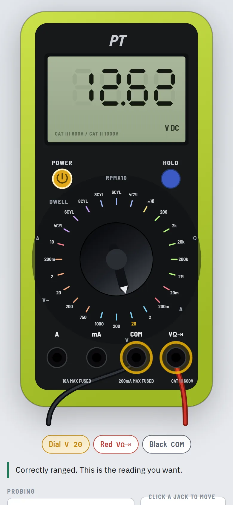

A multimeter you can't break.
I bought a basic multimeter to fix things around the house (a dryer, to start) and realised the hard part isn't reading the number. It's knowing where the dial goes and where the leads plug in. So I built a working copy of that exact meter. Turn the dial, move the leads, pick what you're testing, and it reads what the real one would. That includes the mistakes: plug into the wrong jack across a battery and it blows the fuse, and every reading after that is a false zero, just like the real thing.
On a phone? It works there too, but it's roomier opened full screen.

A teacher next to the meter
Beside the meter there are 24 real jobs, like a car battery, a wall outlet, a dryer's thermal fuse or a dead Xbox power brick. Each one says where the dial goes, which jacks to use, what reading you should expect, and what that reading means.
It refuses to do dangerous things. It won't let you measure resistance on a live circuit, and it explains why.
Under the hood
- One HTML file, about 90 KB, with no server. That's why it can live inside this page.
- The meter is data, not drawings. Every dial position, jack and fuse is described in one table, and both the picture and the readings come from it. Fixing a dial label means changing one line.
- Traced from the product photo. The first version got the meter substantially wrong: it had three jacks where the real one has four, and a different dial. It was rebuilt by tracing the store's product photo, position by position.